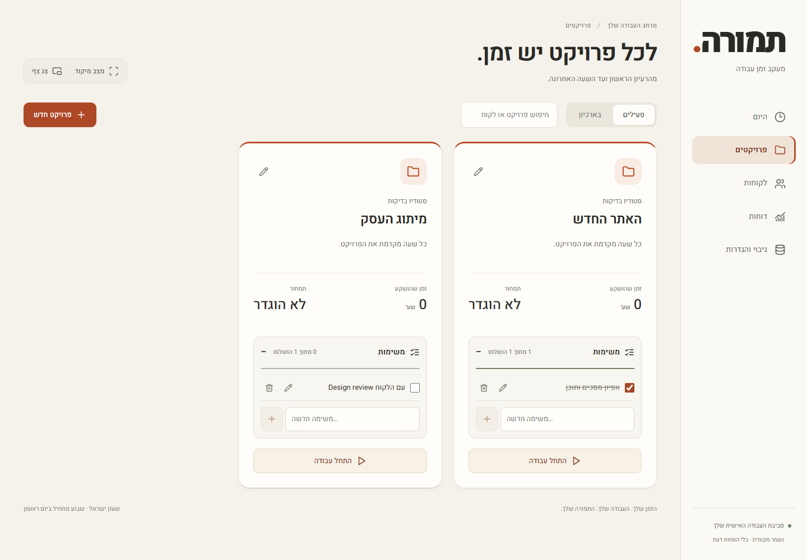
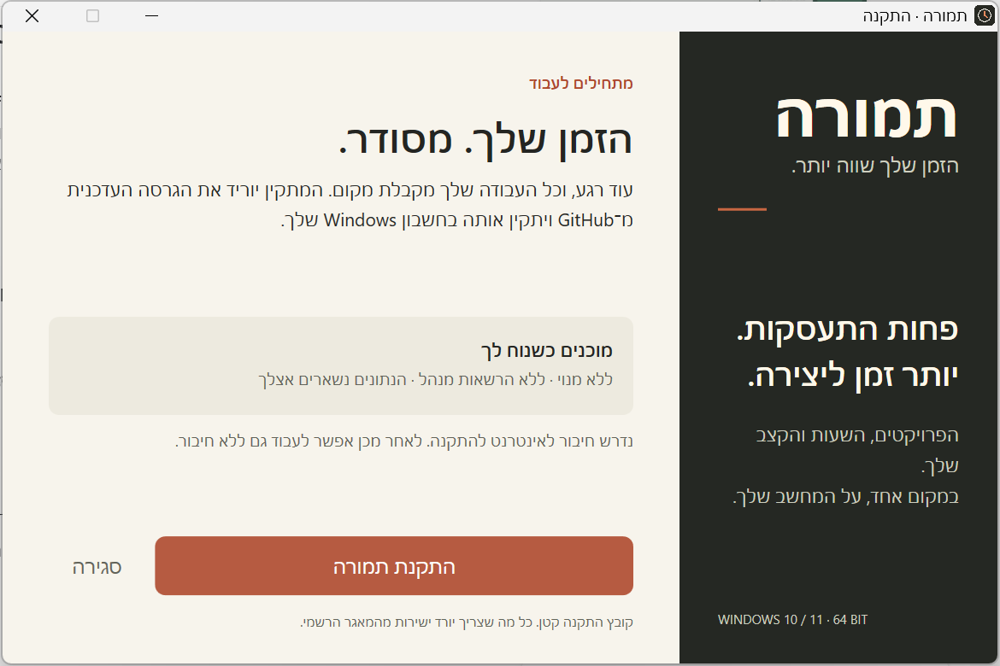

טיימר שנשאר איתכם
חלון קטן שנשאר מעל חלונות העבודה. עוברים בין פרויקטים בלחיצה, והזמן נרשם לכל פרויקט בנפרד.
מעקב שעות, פרויקטים ולקוחות.
בעברית, במחשב שלכם.
Windows 10 / 11 · x64
ללא הרשמה. ללא מנוי.
עדיין ללא חתימת מפרסם. מה כדאי לדעת לפני ההתקנה?

חלון קטן שנשאר מעל חלונות העבודה. עוברים בין פרויקטים בלחיצה, והזמן נרשם לכל פרויקט בנפרד.
לקוחות, משימות ושעות במקום אחד. מסכמים את העבודה בדוחות לפי פרויקט, ומייצאים לאקסל.
נתוני העבודה נשמרים במחשב שלכם. אפשר לעבוד ללא חיבור ולייצא גיבוי. ללא חשבון וללא סנכרון לענן.
לוחצים על כפתור ההורדה ושומרים את המתקין הקטן.
פותחים את הקובץ ובוחרים ״התקנת תמורה״. נדרש חיבור לאינטרנט בשלב הזה.
בוחרים ״פתיחת תמורה״, מוסיפים פרויקט ומתחילים למדוד.

תמורה מחכה לכם במחשב. עכשיו גם באנגלית, עם ארבע ערכות צבעים.
הורדה חינם ל־Windowsיש שאלה או רעיון לשיפור? דברו איתנו ב־GitHub